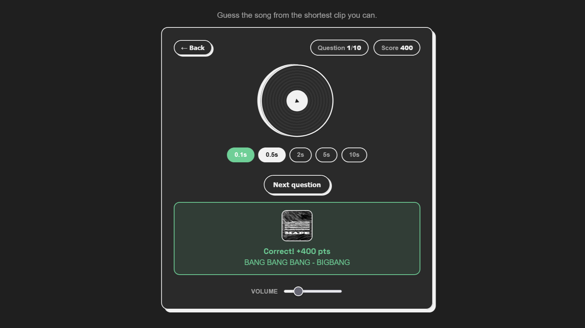
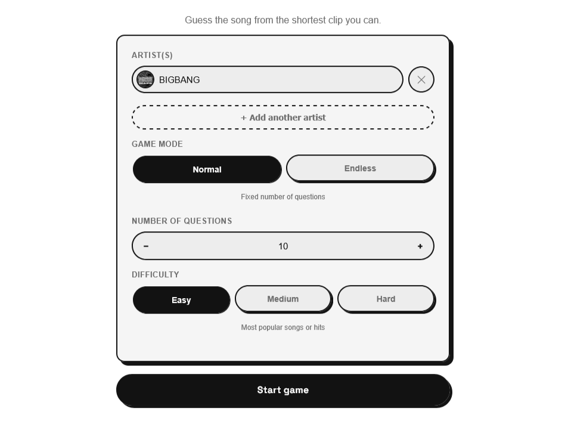
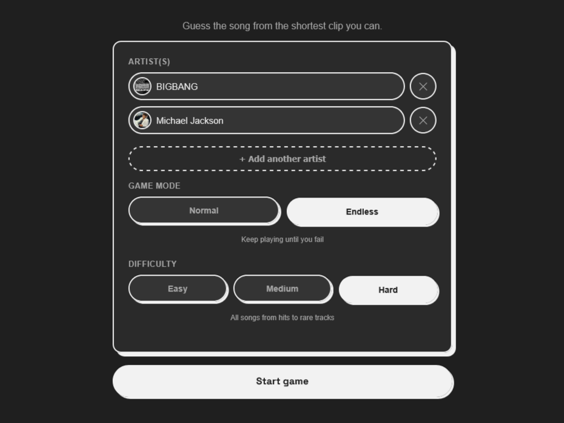

Guess the Song Game
A Songspot-like music trivia game but for any
artist you pick, not a fixed daily song. Search one or more artists, choose a difficulty and game mode,
then guess each track from the shortest clip you can. Vanilla HTML/CSS/JS, iTunes Search/Lookup +
YouTube Data v3, Web Audio API, static-site deploy.

Project Details / Background
So on a random day, I encountered this
video and as someone who averages 15,000 minutes of music a month, I
thought, "I should be able to do this." But then I tried it, and quickly realized those 15,000
minutes come from repeatedly listening to a pretty narrow rotation of artists, recognizing a random
song by a random artist from a 0.1 second clip just wasn't happening. That's when the idea hit:
what if I built the same concept, but customizable where I pick my own artist(s), game mode,
difficulty, and all that? So here it is, I miserably lost at someone else's version, so I built one
that I could actually be good at.
Tech: HTML (page structure/markup), CSS (theme and layouts), JS
(game logic: artist search, fetching songs from iTunes, round flow, scoring, results screen).
Difficulty tiers are a heuristic where buildTiers() treats the top 20% of iTunes's search-relevance
results as "hits" since no free API exposes real popularity numbers. Songs are dealt from a shuffled
"bag" per difficulty (pickOneRound()) so the same track can't repeat until every other song in that
pool has been used. Playback uses Web Audio (AudioBufferSourceNode.start(when, offset, duration))
for sample-accurate timing; artist avatars upgrade via YouTube Data v3 (- Topic channels, 100/day,
Map-cached, referrer-restricted). Theme toggle reuses the same data-theme + localStorage
pattern as the rest of this site.
What I learned: a plain <audio> element controlled with
currentTime + setTimeout isn't precise enough for a true 0.1 second clip — it's fine on desktop
but unreliable on mobile Safari, sometimes producing no audible sound at all. Switching to a decoded
AudioBuffer with start(when, offset, duration) fixed it, since the browser's audio engine
handles the exact timing instead of JavaScript timers trying to. Also learned the hard way that
Deezer's API blocks direct browser requests (no CORS) and Spotify's requires a secret that can't
safely live in a public static site, so iTunes's Search API was the only free, no-auth option that
actually works from the browser.
Next: Share results feature, keyboard shortcuts (Space = play, Enter = guess, etc)
Features

Normal Mode: Choose the Artist you want, Set the number of questions, Choose The difficulty, Answer Questions based on the previously set number.
Endless Mode: Choose the Artist you want,Choose The difficulty, Answer as many questions as you can. Responsive + dark mode reuses portfolio theme (utilities.css:3,
script.js:13). Deployed as static site.
Responsive + dark mode reuses portfolio theme (utilities.css:3,
script.js:13). Deployed as static site.